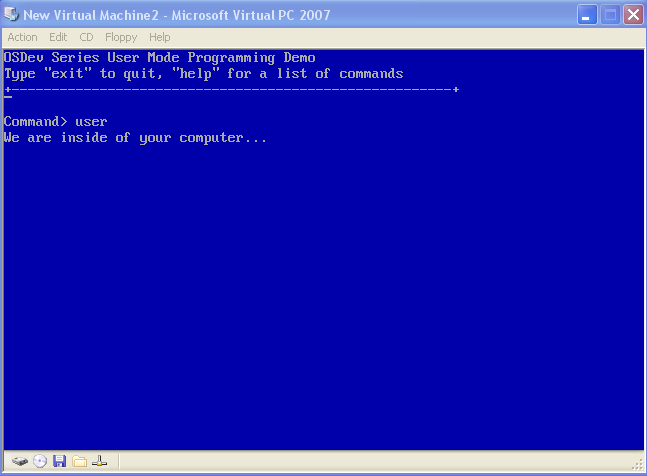

User land
Welcome!
In the last chapter we have looked at VFS's and loaded and displayed a text file. We can use this VFS to also load program files that can be executed. This includes drivers, program software, shared, runtime libraries, and more.
In this chapter we will take the jump into supporting user land software. We will also be taking a look at System API's and how they work.
Lets get started!
Protection Levels
The Rings of Assembly Language
Kernel Land
In [Chapter 5] (fix link OSDev5.html) we have took a quick look at the concept of the rings used in assembly language. These rings represent different protection levels. These protection levels are a hardware detail; they are implemented by the hardware.
Software running in ring 0 have the most control. They can execute priveldge instructions which allow the software to be able to perform more actions: hardware PIO, MMIO, Processor hardware controls and tables (like CPU cache controls and MMRs, et al.)
The list of privileged instructions have been shown in [Chapter 7] (fix link OSDev7.html) however will also be listed here for completness.
If any software running in a protection level greater then 0 attempts to execute the above instructions, the processor generates a Protection fault (#PF) exception.
Privileged Level Instructions table
| Instruction | Description |
|---|---|
| LGDT | Loads an address of a GDT into GDTR |
| LLDT | Loads an address of a LDT into LDTR |
| LTR | Loads a Task Register into TR |
| MOV Control Register | Copy data and store in Control Registers |
| LMSW | Load a new Machine Status WORD |
| CLTS | Clear Task Switch Flag in Control Register CR0 |
| MOV Debug Register | Copy data and store in debug registers |
| INVD | Invalidate Cache without writeback |
| INVLPG | Invalidate TLB Entry |
| WBINVD | Invalidate Cache with writeback |
| HLT | Halt Processor |
| RDMSR | Read Model Specific Registers (MSR) |
| WRMSR | Write Model Specific Registers (MSR) |
| RDPMC | Read Performance Monitoring Counter |
| RDTSC | Read time Stamp Counter |
The kernel or executive of an operating system typically resides in ring 0. Because of this, kernel land or kernel mode is any software running in ring 0. Ring 0 is also known as Supervisor Mode.
All of the software that we have written in this series so far has been kernel mode software: kernel and minidrivers. Microkernels and hybrids typically employ a more advanced driver interfacing scheme then what we use in the series that allow proper driver installation and drivers running in user mode, completely separate from the kernel. It is even possible to have a part of the kernel in user mode; it all depends on your design.
When the system is first started, the system is running in supervisor mode to allow the BIOS and operating system to start up.
User Land
Software running in ring 1 through ring 3 have less control of the machine then software running in ring 0. This is for protection of the machine; if there is an error caused by the software running in rings 1 through 3, the processor notifies the system executive or kernel of the problem using a general protection (#GP) exception.
Most operating systems employ a 2 mode system, kernel mode and user mode. While the x86 family supports 4 protection modes, these operating systems only use 2 for easier portability across architectures.
The design of these operating systems is for kernel mode software to run in ring 0 while user land software run in ring 3. Rings 1 and 2 are not used. Driver software can either operate in ring 0 to access hardware devices, or ring 3 using the provided driver API or System API to communicate with the hardware devices.
Because user mode software can not access hardware devices directly, they must notify the operating system in order to complete system tasks. This includes displaying text, obtaining input from user, printing a document, etc. These functions are provided to the user mode software in the form of libraries and APIs. These libraries and APIs communicate with the System API.
System API ... you have seen this term before. We will look closer on System APIs in a little bit. For now, lets take a closer look at user mode!
Ring -1
Some recent processors have a special protection level that allows a hypervisor ring 0 access. This is sometimes known as "Ring -1".
Welcome to User Land
There are a few steps required to enter user mode. (Come on, you didnt think it would be easy 😀 ) Its not that bad though.
Step 1: Global Descriptor Table
We will be needing to go back to the Global Descriptor Table (GDT) first. The GDT was that big ugly structure that we needed when setting up protected mode for the first time. Recall that the GDT contains a list of 8 byte entries that contains information for the processor. Lets take another look at the GDT entry bit format again: (I have bolded the important parts)
- Bits 56-63: Bits 24-32 of the base address
- Bit 55: Granularity
- 0: None
- 1: Limit gets multiplied by 4K
- Bit 54: Segment type
- 0: 16 bit
- 1: 32 bit
- Bit 53: Reserved-Should be zero
- Bits 52: Reserved for OS use
- Bits 48-51: Bits 16-19 of the segment limit
- Bit 47: Segment is in memory (Used with Virtual Memory)
- Bits 45-46: Descriptor Privilege Level
- 0: (Ring 0) Highest
- 1: (Ring 1)
- 2: (Ring 2)
- 3: (Ring 3) Lowest
- Bit 44: Descriptor Bit
- 0: System Descriptor
- 1: Code or Data Descriptor
- Bits 41-43: Descriptor Type
- Bit 43: Executable segment
- 0: Data Segment
- 1: Code Segment
- Bit 42: Expansion direction (Data segments), conforming (Code Segments)
- Bit 41: Readable and Writable
- 0: Read only (Data Segments); Execute only (Code Segments)
- 1: Read and write (Data Segments); Read and Execute (Code Segments)
- Bit 43: Executable segment
- Bit 40: Access bit (Used with Virtual Memory)
- Bits 16-39: Bits 0-23 of the Base Address
- Bits 0-15: Bits 0-15 of the Segment Limit
Yikes, okay ... The Descriptor Privilege Level (DPL) bits above represents the priveldge level used for that descriptor. So, by setting those bits to 3, we effectivley make the descriptor a user mode descriptor.
So the first step is to create two new descriptors in the GDT - one for user mode data and the other for user mode code. This is done by modifying i86_gdt_initialize to add two new GDT entries for user mode code and data. Lets do that now:
//! initialize gdt
int i86_gdt_initialize () {
//! etc...
//! set default user mode code descriptor
gdt_set_descriptor (3,0,0xffffffff,
I86_GDT_DESC_READWRITE|I86_GDT_DESC_EXEC_CODE|I86_GDT_DESC_CODEDATA|
I86_GDT_DESC_MEMORY|I86_GDT_DESC_DPL,
I86_GDT_GRAND_4K | I86_GDT_GRAND_32BIT | I86_GDT_GRAND_LIMITHI_MASK);
//! set default user mode data descriptor
gdt_set_descriptor (4,0,0xffffffff,
I86_GDT_DESC_READWRITE|I86_GDT_DESC_CODEDATA|I86_GDT_DESC_MEMORY|
I86_GDT_DESC_DPL,
I86_GDT_GRAND_4K | I86_GDT_GRAND_32BIT | I86_GDT_GRAND_LIMITHI_MASK);
// etc...
return 0;
}
The above code is the same as what we did when creating the other GDT entries, with one change. Notice the I86_GDT_DESC_DPL flag. This will set both DPL bits to 2 which makes them for user mode (ring 3). Please note that none of this is new; all of the above flags were written from an ealier chapter when we covered protected mode.
Thats all that is needed! Note that the user mode code descriptor is installed at index 3 in the GDT, while the user mode data descriptor is at index 4. Remember that segment registers contain the offset of the selector it uses. Because each GDT entry is 8 bytes in size, it would be: code selector 0x18 (83) and data selector 0x20 (84).
So in order to use one of these selectors, just copy one of the above segment selectors into the segment register that will be used.
DPL
The Descriptor Protection Level (DPL) is the protection level of a segment descriptor. For example, our kernels code and data segments DPL are 0 for ring 0 access.
RPL
The Requested Protection Level (RPL) allows software to override the CPL to select a new protection level. This is what allows software to request changes to other protection levels, such as ring 0 to ring 3. The RPL is stored in bits 0 and 1 of a descriptor selector.
Wait, what? Remember that a segment selector is just an offset into the GDT. So, for example, 0x8 bytes was the offset for our ring 0 code descriptor. 0x10 was the offset of our data selector. 0x8 and 0x10 are segment selectors. GDT entries are all 8 bytes, so the value of a segment selector will always be a multiple of 8: 8, 16, 24, 32 etc. 8, in binary, is 1000. This means, with any value of a segment selector, the low three bits are zero.
The RPL is stored in the low two bits of the segment selector. So, if our segment selector is 0x8, the RPL is 0. If its 0xb (0x8 but with first two bits set, binary 1011 instead of 1000) the RPL is 3. This is required; this is how our software can switch to user mode.
CPL
The Current Protection Level (CPL) is the protection level of the currently executing program. The CPL is stored in bits 0 and 1 of SS and CS.
Remember that GDT entries are 8 bytes in size. Because segment registers, in protected mode, contain a segment selector (GDT entry offset), the low three bits are guaranteed to be zero. The low two bits of CS and SS are used to store the CPL of the software.
Protection Levels (Step 1)
If a software attempts to load a new segment into a segment register, the processor performs checks against the CPL of the software and RPL of the segment that it is trying to load. If the RPL is higher then the CPL, the software can load the segment. If it is not, the processor will raise a General Protection Fault (#GP).
It is important to understand how RPL works, it is required information used when switching to user mode.
Step 2: The switch
Now we can make the switch to user mode!
There are two ways of performing the jump: Using SYSEXIT instruction or with an IRET. Both of these methods have their advantages and disadvantages so lets take a closer look. We will be using IRET in the series for portability purposes.
SYSEXIT Instruction
This section is planned to be expanded on.
IRET / IRETD Instruction
A lot of operating systems may employ this method as it is more portable then using SYSEXIT. Larger operating systems might even support this as a back up method in the case SYSEXIT is not avialable.
Okay, so how can IRET help us perform the switch? Recall from [Chapter 3] (fix link OSDev5.html) the different methods used when switching modes. IRET is a trap return instruction. When executing an IRET, we can adjust the stack frame so it returns to user mode code.
When IRETD is executed, it expects the stack to have the following:
- SS
- ESP
- EFLAGS
- CS
- EIP
IRETD causes the processor to jump to CS:EIP, which it obtains from the stack. It also sets the EFLAGS register with the value above from the stack. SS:ESP will be set to point to the SS and ESP values that was obtained from the stack.
These are automatically pushed on the stack when an INT instruction is executed. Because of this, in the normal case these values would remain untouched. However, we can modify these values to cause IRET to perform a mode switch.
Okay, so first is setting the segment selectors. Recall that the low two bits represent the RPL that we want. In our case, we want 3 for user mode. So lets do that now:
void enter_usermode () {
_asm {
cli
mov ax, 0x23 ; user mode data selector is 0x20 (GDT entry 3). Also sets RPL to 3
mov ds, ax
mov es, ax
mov fs, ax
mov gs, ax
Now we can perform the switch to user mode. This is done by building the stack frame for IRET and issuing the IRET:
push 0x23 ; SS, notice it uses same selector as above
push esp ; ESP
pushfd ; EFLAGS
push 0x1b ; CS, user mode code selector is 0x18. With RPL 3 this is 0x1b
lea eax, [a] ; EIP first
push eax
iretd
a:
add esp, 4 // fix stack
}
}
Notice that the stack frame matches that of what was in the list above. The IRETD instruction will cause 0x1B:a to be called in the above code inside of ring 3.
There is a slight problem however. If you try to use the above routine, or switch to user mode in a different way in the kernel, it will cause a Page Fault (PF) exception. This is do to the pages for the kernel being mapped for kernel mode-access only. To fix this, we will either need to enter user mode a different way or map the kernel so user mode software can access it.
For now, we are just going to map the kernel so user mode software can access it. This involves updating the vmmngr_initialize() routine and setting the USER bit in the PTEs and PDEs.
In a more complex operating system, this approach would not be used. This approach only works if we map kernel pages so they can be accessed by user mode software, which is bad. A more recommended approach is to keep kernel pages mapped for kernel-only access, and have the loader component of your kernel to map user mode pages when loading a user program. A stack and heap allocator would then map a region for program stack and heap to user mode. This current method shares the kernel stack with user land; larger systems should not do this.
Entering v8086 Mode
These are the same steps involved when setting up v8086 mode. v8086 mode requires a user mode task in order to enter v86 mode. Thus, by doing the above, you can enter v86 mode as well. However, there is one slight modification needed.
Recall the format of the EFLAGS register. Bit 17 (VM) is the v8086 Mode Control Flag. Because we push a value for EFLAGS on the stack when performing an IRET, in order to enter v86 mode, just set bit 17 of EFLAGS before pushing it on the stack. This will cause IRET to set the VM bit in the EFLAGS register on return.
Thats all that is needed to enter v8086 mode.
Notes on design (The switch)
The above method presents an easy way to get into user mode, but at a cost: in order for the above method to work, the kernel region must be mapped to allow ring 3 software access to kernel memory. Because of this, while running in ring 3, the software-while will have some limitations do to protected mode, will be able to call kernel routines directly or even trash kernel space.
A possible way to resolve the above issues is to keep kernel memory reserved for ring 0 software. The loader component of the kernel can then map the necessary ring 3 regions of memory for the process while loading the program.
This will be looked at further in the next chapter when we develop a loader for the OS.
Switching back to kernel land
Step 1: Setting up the TSS
The x86 architecture supports hardware assisted task switching. This means the architecture includes hardware defined structures that allow the processor to select between different tasks.
Most modern operating systems do not utilize the hardware task switching support for portability purposes. These operating systems typically employ software task switching methods.
Task State Segment (TSS)
The TSS structure is quite large:
#ifdef _MSC_VER
#pragma pack (push, 1)
#endif
struct tss_entry {
uint32_t prevTss;
uint32_t esp0;
uint32_t ss0;
uint32_t esp1;
uint32_t ss1;
uint32_t esp2;
uint32_t ss2;
uint32_t cr3;
uint32_t eip;
uint32_t eflags;
uint32_t eax;
uint32_t ecx;
uint32_t edx;
uint32_t ebx;
uint32_t esp;
uint32_t ebp;
uint32_t esi;
uint32_t edi;
uint32_t es;
uint32_t cs;
uint32_t ss;
uint32_t ds;
uint32_t fs;
uint32_t gs;
uint32_t ldt;
uint16_t trap;
uint16_t iomap;
};
#ifdef _MSC_VER
#pragma pack (pop, 1)
#endif
The TSS is used to store information about the state of the machine prior to a hardware task switch. It has a lot of members, so lets take a look!
- General Fields:
- State of LDT,EIP,EFLAGS,CS,DS,ES,FS,GS,SS,EAX,EBX,ECX,EDX,ESP,EBP,ESI,EDI prior to task switch
- prevTSS - Segment Selector of previous TSS in task list
- cr3 - PDBR, address of page directory for current task
- trap
- Bit 0: 0: Disabled; 1: Raise Debug exception when task switch to task occurs
- iomap - 16 bit offset from TSS base to I/O permissions and interrupt redirection bit maps
- esp0,esp1,esp2 - ESP stack pointers for ring 0, 1, and 2
- ss0,ss1,ss2 - SS stack segments for ring 0, 1, and 2
Most of these fields are pretty simple. While we are not using hardware assisted task switching, we need to let the processor know how to go back to ring 0. Because of this, we need to set some of the fields in this structure - in particular the ring 0 stack and selector fields.
Step 2: Installing the TSS
Descriptor Segment
A TSS as implied by its name is a segment. Simular to all segments, the TSS requires an entry in the GDT. This allows us to control the TSS: setting if the task is busy or inactive; what software can access it (DPL) and other flags that can be set with descriptors. The Base Address fields must be the base address of the TSS structure that we set up.
LTR Instruction
The LTR (Load Task Register) instruction is used to load the TSS into TSR register. For example:
void flush_tss (uint16_t sel) {
_asm ltr [sel]
}
ax is the segment selector for the TSS. Because the architecture supports hardware task switching, TSR stores the address of the TSS that defines the current task.
The Task State Register (TSR) is a register that stores the TSS Selector, TSS Base Address and TSS Limit. Only the TSS Selector can be modified by software however.
Installing the TSS
In order to install the TSS structure, first install the GDT entry for the TSS. Then select the TSS as the current task by calling flush_tss above.
void install_tss (uint32_t idx, uint16_t kernelSS, uint16_t kernelESP) {
//! install TSS descriptor
uint32_t base = (uint32_t) &TSS;
gdt_set_descriptor (idx, base, base + sizeof (tss_entry),
I86_GDT_DESC_ACCESS|I86_GDT_DESC_EXEC_CODE|I86_GDT_DESC_DPL|I86_GDT_DESC_MEMORY,
0);
//! initialize TSS
memset ((void*) &TSS, 0, sizeof (tss_entry));
TSS.ss0 = kernelSS;
TSS.esp0 = kernelESP;
TSS.cs=0x0b;
TSS.ss = 0x13;
TSS.es = 0x13;
TSS.ds = 0x13;
TSS.fs = 0x13;
TSS.gs = 0x13;
//! flush tss
flush_tss (idx * sizeof (gdt_descriptor));
}
In the above code, TSS is a global structure definition for our tss_entry structure. We set up the TSSs selector entries to match the previous task (user mode selectors) and ring 0 stack (kernel stack, located at kernelSS:kernelESP). flush_tss installs the TSS into TSR.
Additional Instructions
There are a few other instructions that can be useful. All of these instructions can be executed by user mode software.
VERR Instruction
VERR (Verify Segment is Readable) can be used to check if a segment is readable. The processor will set the zero flag (ZF) to 1 if it can be read. This instruction can be executed at any proviledge level.
verr [ebx]
jz .readable
VERW Instruction
VERW (Verify Segment is Writable) can be used to check if a segment is writable. The processor will set the zero flag (ZF) to 1 if it can be written. This instruction can be executed at any proviledge level.
verw [ebx]
jz .readable
LSL Instruction
This instruction can be used to load the segment limit of a selector into a register.
lsl ebx, esp
jz .success
ARPL Instruction
This instruction can be used to adjust the RPL of a selector. It takes the form arpl dest,src, where dest is a memory location or register, src is a register. If the RPL of dest are less then src, the RPL bits of dest are set to the RPL bits of src. For example:
arpl ebx, esp
System API
Abstract
A System API provides tools, documentations, and interfaces that allow software to interact with the operating system. Different operating systems may use different termonology but the basic idea is the same. For example, Windows calls this API the "Native API".
The System API facilitates software interacting with the operating system and device drivers. The System API is the interface between user mode software and kernel mode software. Whenever the software needs system information or to perform a system task, such as creating a file, the software would invoke a system call.
A System Call also known as a System Service is a service provided by the operating system. This service is usually a function or routine. Software can invoke system calls in order to perform system tasks.
Design
SYSENTER / SYSEXIT
This section is planned to be expanded on.
Software Interrupt
Most System APIs are implemented by using a software interrupt. Software can use an instruction, like int 0x21 to call an operating system service. For example, to call the DOS's Terminate function we would do:
mov ax, 0x4c00 ; function 0x4c (terminate) return code 0
int 0x21 ; call DOS service
In the above code, AH contains a function number. The int 0x21 calls the 0x21 interrupt vector to call DOS.
In order for the above to work, the operating system will need to install an ISR for interrupt vector 0x21. The ISR would be a Finity State Machine (FSM) that compares AH and passes control to the correct kernel mode function. And that, dear readers, is the design.
Software interrupts are more portable then SYSENTER and SYSEXIT. Because of this, most operating systems provide support for this method (possibly along with other methods.) We will be using this method in the series.
Examples
System APIs typically consist of hundreds of system calls.
This lists some operating systems and what methods they support. The INT numbers are software interrupt vector numbers using the above method.
- DOS: INT 0x21
- Win9x (95,98): INT 0x2F
- WinNT (2k,XP,Vista,7): INT 0x2E, SYSENTER/SYSEXIT, SYSCALL/SYSRET
- Over 211 functions
- Linux: INT 0x80, SYSENTER/SYSEXIT
- Over 190 functions
Basic System API
Step 1: System Call Table
Most System APIs implement a System Call table that contains all services. This table can be static, dynamic, auto generated, or a combination of the three. Large operating systems typically employ an auto-generated dynamic size table of system calls. This is do to the large number of system services that might be in this table; it would be very tedius to create it by hand.
For our purposes, we can just define a system service table in the kernel. It would contain the addresses of different functions that we have in the kernel that would like to be callable:
#define MAX_SYSCALL 3
void* _syscalls[] = {
DebugPrintf
};
Hm, this table is quite small. We will add more to this list in the upcoming chapters, however it wont be too complex.
Because DebugPrintf is accessable from user mode (do to the kernel pages being mapped to allow this), and DebugPrintf not using any privedge instruction, the user mode software can technically call this routine directly without any problems. Depending on the design of your operating system or executive software this can cause security and stabability issues.
This is why it is typically recommended to keep the kernel pages accessable only from kernel mode. While it adds complexity to the software, the end result might be worth the effort.
Step 2: The Service Dispatcher
The next step is to create the service dispatcher ISR. Before that, we need to decide on what ISR to use... hm... Ill just follow Linux here and use 0x80. You can use any interrupt vector you like however, a lot of OSs use different vectors. So, lets install the ISR.
Remember that ISRs are stored in the IDT managed by the HAL layer. Also recall from [chapter 15] (fix link OSDev15.html) that each IDT descriptor has its own DPL setting. If the DPL of an IDT entery is less then the CPL, a GPF will result. In other words, when we enter user mode, we can only call ISRs with IDT descriptors with DPL 3. Because we want our system interrupt callable from ring 3 software, we must install this ISR with the correct flags.
However, do to the current design of the HAL subsystem, this cannot be done by just calling setvect(), as this function does not allow us to set specific flags. To work around this issue, setvect() has been modified with a second paramater to allow optional flags to be set. This uses the C++ default paramater feature to achieve this so no other code needs to be updated.
void syscall_init () {
//! install interrupt handler!
setvect (0x80, syscall_dispatcher, I86_IDT_DESC_RING3);
}
Thats all there is to it 😀
syscall_dispatcher is our ISR for system calls. This ISR will need to determin what system service to call by looking up the function in _syscalls. Usually System APIs use EAX to idenitify function numbers. We are going to do the same here. Thanks to the system service table we defined above, we can use EAX as an index. So, the function to call will be _syscalls [eax].
_declspec(naked)
void syscall_dispatcher () {
static int idx=0;
_asm mov [idx], eax
//! bounds check
if (idx>=MAX_SYSCALL)
_asm iretd
//! get service
static void* fnct = _syscalls[idx];
Okay, so now we have a pointer to the function to call. However now we a small problem. The above will effectively get a pointer to the service function we want based on the value given by EAX. However we dont know what function it is. We also dont know what to pass to the function nor the amount of paramaters it has.
One possible solution is to push all registers on the stack for the function call. Because the services are all C routines, we have to pass the paramaters in the way C functions would expect them.
//! and call service
_asm {
push edi
push esi
push edx
push ecx
push ebx
call fnct
add esp, 20
iretd
}
}
Thats it 😀 The add esp, 20 pops the 20 bytes off the stack that we pushed; and notice we return from the ISR with an IRETD instruction.
After the system software or executive installs their ISR to their respective interrupt vector, the software can call it by issuing a software interrupt. For example, if we call syscall_init to install our ISR, we can call a system service like this:
_asm {
xor eax, eax ; function 0, DebugPrintf
lea ebx, [stringToPrint]
int 0x80 ; call OS
}
Notes on design (Basic System API)
Most operating systems abstract the interrupt vector number and register details behind C interfaces. While calling system services in larger OSs directly is still possible, it is recommended to develop a standard C interface around the system services your system provides to user land software.
Large OSs typically wont have a system service for printing a message to the display. Rather it would contain services that can be called from user land software that allows user APIs to interact with kernel mode services, servers, or device drivers. Because of this, large OSs typically contain system APIs consisting of several hundred function calls.
Demo

Enter into user mode
Demo download
New and Modified Files
This chapter adds a few more files to the series demo. This includes:
- hal/tss.h
- hal/tss.cpp
- Includes TSS routines described in this chapter
- hal/user.cpp
- Includes user mode switching routines
This chapter also modifies the following files:
- kernel/mmngr_virtual.cpp
- vmmngr_initialize has been updated to allow kernel pages to be user accessable
- hal/hal.h/cpp
- set_vect() has been modified with an added second paramater
- hal/gdt.h
- MAX_DESCRIPTORS has been redefined to 6 for the added GDT entries
- hal/gdt.cpp
- Upgraded to include the installation of the user mode descriptors
- kernel/main.cpp
- Updated to reflect new changes
Conclusion
Welcome to user land!
Now we have everything that is needed to switch between user land and kernel land. With this, we now have the capability of mapping user mode pages, loading, and running a program in usermode. We dont quite have the capability of returning back to the kernel of the OS in a nice way do to the system not managing tasks. We will look at this in the next chapter.